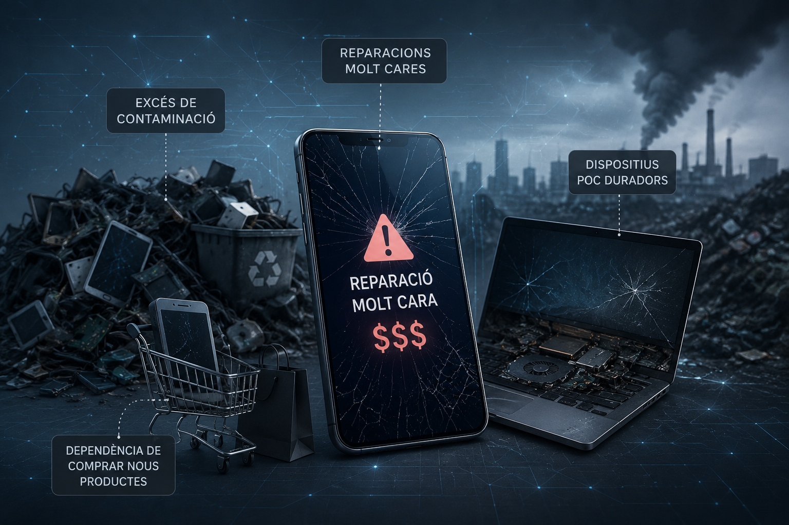

Problemes actuals de la tecnologia
Moltes empreses tecnològiques creen dispositius amb peces difícils de substituir. Això provoca que les reparacions siguin molt cares i que moltes persones prefereixin comprar un dispositiu nou abans que reparar-lo.
Empreses com Apple han estat criticades pels elevats costos de reparació i per limitar l’accés als components internals dels seus dispositius.

Principals problemes detectats
1. Reparacions molt cares
Canviar una pantalla o una bateria pot tenir un cost molt elevat.
2. Dispositius poc duradors
Molts mòbils deixen de funcionar correctament després de pocs anys.
3. Excés de contaminació
Els residus electrònics augmenten cada any a nivell mundial.
4. Dependència de comprar nous productes
Moltes marques obliguen indirectament als usuaris a renovar els seus dispositius.
Conseqüències
- Augment de la contaminació ambiental.
- Major despesa econòmica.
- Més consum de recursos naturals.
- Increment dels residus electrònics.